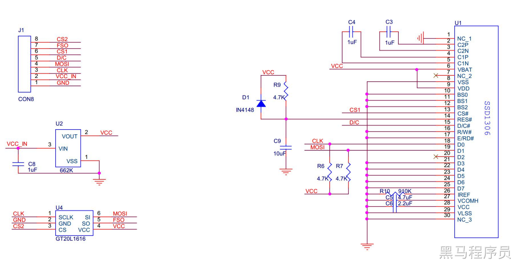
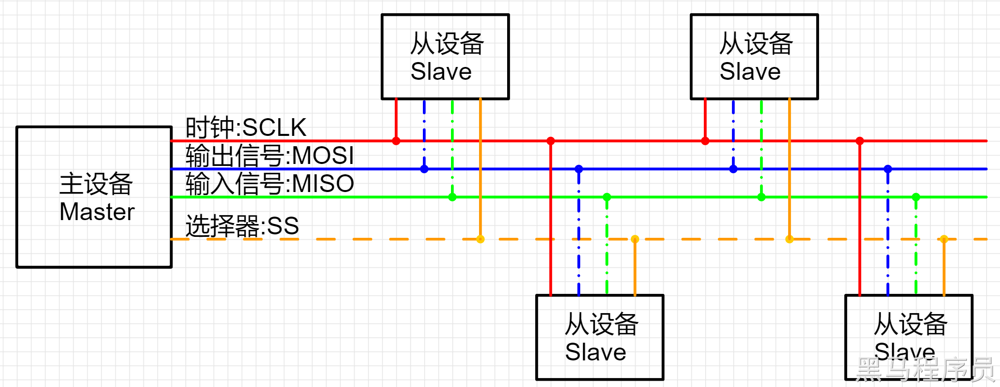
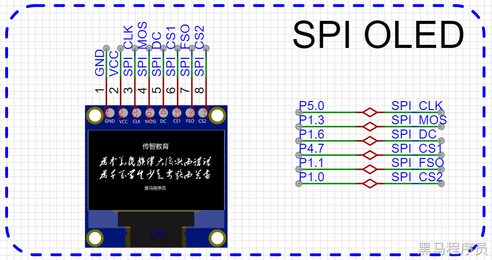
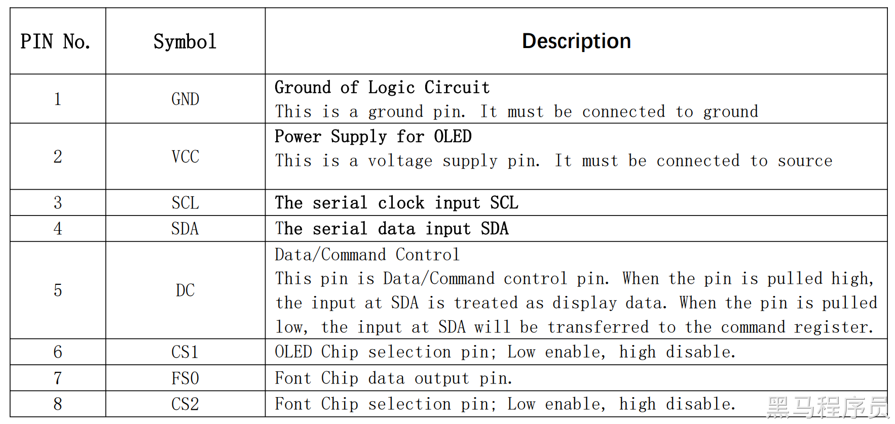
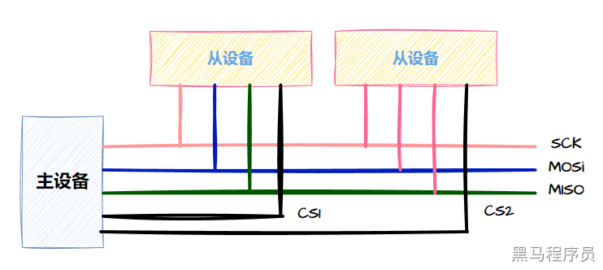
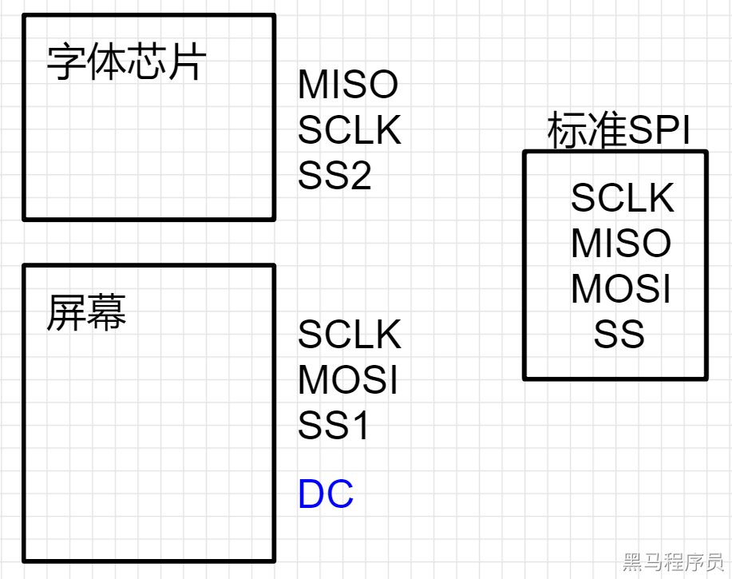

<!DOCTYPE lake>
<h2 data-lake-id="GNCAS" id="GNCAS"><span data-lake-id="u2c70971d" id="u2c70971d">学习目标</span></h2><h2 data-lake-id="jpkOq" id="jpkOq"><span data-lake-id="ufc2beed8" id="ufc2beed8">学习内容</span></h2><ul list="udf71cfdb"><li data-lake-id="u8dec1fc7" fid="u408c256e" id="u8dec1fc7"><span data-lake-id="ue477d4ea" id="ue477d4ea">能够驱动屏幕显示</span></li><li data-lake-id="ubf295a57" fid="u408c256e" id="ubf295a57"><span data-lake-id="ufa77805f" id="ufa77805f">能够使用API</span></li><li data-lake-id="u4e195dc3" fid="u408c256e" id="u4e195dc3"><span data-lake-id="ube53b419" id="ube53b419">理解SPI协议基本规则</span></li></ul><h3 collapsed="true" data-lake-id="CYTFj" id="CYTFj"><span data-lake-id="u0f4a7235" id="u0f4a7235">SSD1306</span></h3><p data-lake-id="u5b321f6b" id="u5b321f6b"><span data-lake-id="u9b1f7b1e" id="u9b1f7b1e">SSD1306是一款OLED显示驱动芯片，由Solomon Systech Limited公司制造。它支持基于SPI和I2C两种通信协议，具有低功耗、高对比度和快速响应等优点，通常用于各种小型嵌入式系统和DIY电子项目中。</span></p><p data-lake-id="u4ea90db7" id="u4ea90db7"><span data-lake-id="uad201241" id="uad201241">SSD1306芯片可以控制OLED显示屏上的像素，支持的分辨率为128x32、128x64、96x16和64x48等不同规格。其中，128x64是最常见的规格，它由128列和64行像素组成，总共有8192个像素点。SSD1306芯片还支持多种字体和字符集，可显示各种文字、图标、图形等内容。</span></p><p data-lake-id="u107d1cf5" id="u107d1cf5"><span data-lake-id="u11ca7a2c" id="u11ca7a2c">SSD1306芯片还具有内置的RAM缓冲区，可以通过SPI或I2C接口向缓冲区写入数据，然后再通过命令将缓冲区中的数据刷新到OLED显示屏上。这种方式可以大大减少SPI或I2C通信的次数，提高数据传输效率，从而达到更好的显示效果。</span></p><p data-lake-id="u926e51a4" id="u926e51a4"><span data-lake-id="u00967ebe" id="u00967ebe">总之，SSD1306是一款高性能、低功耗、易于控制的OLED显示驱动芯片，广泛应用于各种嵌入式系统和电子产品中，是一种理想的显示解决方案。</span></p><p data-lake-id="u4a739e0b" id="u4a739e0b"><span data-lake-id="ufb3c6d95" id="ufb3c6d95">以下是对ssd1306的特点总结:</span></p><ol list="ufa308f26"><li data-lake-id="u7d21dee3" fid="u3470206e" id="u7d21dee3"><span data-lake-id="u24f16dbb" id="u24f16dbb">支持I2C、SPI等多种通信接口；</span></li><li data-lake-id="u1536a6e8" fid="u3470206e" id="u1536a6e8"><span data-lake-id="ub696ab05" id="ub696ab05">驱动方式简单，可快速上手；</span></li><li data-lake-id="ue439bd46" fid="u3470206e" id="ue439bd46"><span data-lake-id="u00c3b19f" id="u00c3b19f">低功耗，显示效果好，适合各种嵌入式系统；</span></li><li data-lake-id="u59ee020e" fid="u3470206e" id="u59ee020e"><span data-lake-id="u8ad2be9f" id="u8ad2be9f">内部集成RAM，能够缓存多页的图像；</span></li><li data-lake-id="u7aa0ec01" fid="u3470206e" id="u7aa0ec01"><span data-lake-id="u8f117fcd" id="u8f117fcd">提供多种字体和图形，支持自定义字体和图形；</span></li><li data-lake-id="u2b84881e" fid="u3470206e" id="u2b84881e"><span data-lake-id="u78debd81" id="u78debd81">支持对图像进行旋转、反转等操作；</span></li><li data-lake-id="u0d5fd76f" fid="u3470206e" id="u0d5fd76f"><span data-lake-id="u02a4e7fb" id="u02a4e7fb">支持多种显示模式和亮度控制。</span></li></ol><p data-lake-id="u5350a7ef" id="u5350a7ef"><span data-lake-id="ua4ed9a9a" id="ua4ed9a9a">应用场景:</span></p><ol list="u28905ae2"><li data-lake-id="u241a25bc" fid="uaa82ae38" id="u241a25bc"><span data-lake-id="u0e4bd439" id="u0e4bd439">数码管；</span></li><li data-lake-id="u14bc6427" fid="uaa82ae38" id="u14bc6427"><span data-lake-id="u3fce12e5" id="u3fce12e5">智能手表、手环等可穿戴设备；</span></li><li data-lake-id="ue3a2b49f" fid="uaa82ae38" id="ue3a2b49f"><span data-lake-id="u392e66a0" id="u392e66a0">智能家居控制面板；</span></li><li data-lake-id="ub07952fd" fid="uaa82ae38" id="ub07952fd"><span data-lake-id="uce218a50" id="uce218a50">可移动终端设备的显示部分；</span></li><li data-lake-id="uc1f9678e" fid="uaa82ae38" id="uc1f9678e"><span data-lake-id="u1518e26a" id="u1518e26a">电子秤、体脂称等健康设备的显示部分。</span></li></ol><h3 data-lake-id="XeBGv" id="XeBGv"><span data-lake-id="u5e807c7d" id="u5e807c7d">SPI版的SSD1306</span></h3><p data-lake-id="uc19a31cb" id="uc19a31cb"></p><p data-lake-id="ud1e51357" id="ud1e51357"><span data-lake-id="uc173d6fb" id="uc173d6fb">SPI版本就是在原理的模组基础上做了外围电路，外围电路的作用是将ssd1306的模式配置为SPI模式，这样就可以采用SPI方式进行通讯</span></p><h3 data-lake-id="E73DA" id="E73DA"><span data-lake-id="u526c8d60" id="u526c8d60">SPI协议</span></h3><p data-lake-id="u327bce32" id="u327bce32"><span data-lake-id="ufac056cf" id="ufac056cf">SPI（Serial Peripheral Interface）是一种同步串行通信协议，用于在嵌入式系统中连接微控制器（MCU）和外围设备（如传感器、存储器、显示器等）。SPI协议需要4根线进行数据传输，分别是：</span></p><ul list="uf1d021c6"><li data-lake-id="ubb55a1aa" fid="ua2480df9" id="ubb55a1aa"><span data-lake-id="u884eae92" id="u884eae92">SCLK：时钟信号线，由主设备控制时序，用于同步数据传输。</span></li><li data-lake-id="u9604f86e" fid="ua2480df9" id="u9604f86e"><span data-lake-id="u7b11fe50" id="u7b11fe50">MOSI：主设备输出从设备输入线，主设备通过该线向从设备发送数据。Master Output Slave Input</span></li><li data-lake-id="u5f7d2ae4" fid="ua2480df9" id="u5f7d2ae4"><span data-lake-id="u3c7488ff" id="u3c7488ff">MISO：主设备输入从设备输出线，从设备通过该线向主设备发送数据。Master Input Slave Output</span></li><li data-lake-id="u93508ee6" fid="ua2480df9" id="u93508ee6"><span data-lake-id="u78861b93" id="u78861b93">SS：从设备片选线，用于选择与主设备通信的从设备。(其他叫法CS)</span></li></ul><p data-lake-id="uede6e543" id="uede6e543"><span data-lake-id="u3bc6aa70" id="u3bc6aa70">SPI协议支持全双工通信，意味着主设备和从设备可以同时发送和接收数据。SPI协议传输数据时采用的是先进先出的方式。</span></p><p data-lake-id="u4ab4d553" id="u4ab4d553"><span data-lake-id="u274a6181" id="u274a6181">标准的SPI总共有4根线，包括：SCLK（时钟线）、MOSI（主机输出从机输入线）、MISO（主机输入从机输出线）和SS（片选线）。但是在实际的应用中，可能会根据需要添加其他的辅助信号线，如数据就绪信号等。因此，SPI的具体实现方式可能会有所不同。</span></p><p data-lake-id="u00b33750" id="u00b33750"><span data-lake-id="u25ce9851" id="u25ce9851">SPI协议中的DC线是指数据/命令线（Data/Command line），有时也称作RS线（Register Select line）。它是用来控制从主设备到从设备传输的数据是命令还是普通数据的信号线。在许多液晶显示屏、OLED屏幕、触摸屏等设备中，SPI总线上的DC线通常用于指示传输的数据是图像数据还是命令数据，以便设备能够正确地解析和处理数据</span></p><p data-lake-id="u1eb31525" id="u1eb31525"></p><p data-lake-id="u0b155040" id="u0b155040"><span data-lake-id="u605302a7" id="u605302a7">SPI通讯的时序是由主设备（Master）发起的，在数据传输的过程中，需要进行时序的协调，具体流程如下：</span></p><ul list="u153e3e05"><li data-lake-id="ua6ce30cd" fid="u65ae5f4b" id="ua6ce30cd"><span data-lake-id="u23273ca9" id="u23273ca9">主设备（Master）通过片选信号（Slave Select）选择通信的从设备（Slave）。</span></li><li data-lake-id="u68b2a95e" fid="u65ae5f4b" id="u68b2a95e"><span data-lake-id="ub411cd4b" id="ub411cd4b">主设备（Master）向从设备（Slave）发送时钟信号（SCLK），并将数据从输出口（MOSI）发送到从设备（Slave）的输入口。</span></li><li data-lake-id="u6af7dd26" fid="u65ae5f4b" id="u6af7dd26"><span data-lake-id="u9142ce6e" id="u9142ce6e">从设备（Slave）在每个时钟脉冲的下降沿采样（MOSI）的数据，并将数据通过主输入（MISO）发送回主设备（Master）。</span></li><li data-lake-id="u250758b3" fid="u65ae5f4b" id="u250758b3"><span data-lake-id="u42c9f574" id="u42c9f574">当传输完成后，主设备（Master）取消片选信号（Slave Select），从设备（Slave）被释放。</span></li></ul><p data-lake-id="u4d066673" id="u4d066673"><span data-lake-id="u69958db7" id="u69958db7">具体的通讯流程时序可以根据实际应用情况进行调整，例如可以调整时钟信号的极性和相位、选择合适的时钟频率等。</span></p><h3 data-lake-id="UonX7" id="UonX7"><span data-lake-id="u00d595b6" id="u00d595b6">原理图</span></h3><p data-lake-id="ufb6b63bb" id="ufb6b63bb"></p><p data-lake-id="u4c32324f" id="u4c32324f"></p><p data-lake-id="u5e3be508" id="u5e3be508"></p><h3 data-lake-id="WXVmx" id="WXVmx"><span data-lake-id="udbb185a5" id="udbb185a5">字库芯片</span></h3><p data-lake-id="udc0ac941" id="udc0ac941"><span data-lake-id="u1eeae9e9" id="u1eeae9e9">字库芯片是一种专门用于储存字符或汉字等字形信息的存储器芯片。它通过将不同的字形编码储存在内部存储器中，提供了一种快速、高效的方法来支持文本显示。使用字库芯片，可以避免在应用程序中占用过多的内存空间，并且可以提高文本显示的速度和准确性。 字库芯片通常包含标准的字形、符号和汉字，而且支持多种字体和字号的显示。</span></p><p data-lake-id="u702d7eb1" id="u702d7eb1"><span data-lake-id="ueb4fe1eb" id="ueb4fe1eb">字库芯片采用的也是SPI协议进行通讯。</span></p><p data-lake-id="uedaa1f17" id="uedaa1f17"><span data-lake-id="uedc81899" id="uedc81899">​</span><br/></p><h3 data-lake-id="QPMb5" id="QPMb5"><span data-lake-id="uc9887bc4" id="uc9887bc4">中文显示屏原理</span></h3><p data-lake-id="ubcb152d0" id="ubcb152d0"><span data-lake-id="u8418d3dd" id="u8418d3dd">由显示屏和中文字库芯片组成。</span></p><ol list="uc3240f6e"><li data-lake-id="u07e39084" fid="u10a36fae" id="u07e39084"><span data-lake-id="u8b81d89a" id="u8b81d89a">显示屏接外接电路采用SPI模式显示</span></li><li data-lake-id="u1070b012" fid="u10a36fae" id="u1070b012"><span data-lake-id="u4dc0303e" id="u4dc0303e">中文字库采用SPI进行访问</span></li></ol><p data-lake-id="ucda3cda1" id="ucda3cda1"></p><p data-lake-id="u0ebbad92" id="u0ebbad92"><span data-lake-id="u9dca50e1" id="u9dca50e1">标准的SPI协议包含:</span></p><ul list="u1d78943c"><li data-lake-id="ua51d97b6" fid="u4e3595d2" id="ua51d97b6"><span data-lake-id="u6f426684" id="u6f426684">SCLK: 时钟频率</span></li><li data-lake-id="u241b80fd" fid="u4e3595d2" id="u241b80fd"><span data-lake-id="u6f0f1bb8" id="u6f0f1bb8">MOSI：Master Out Slave In，主设备给从设备传递数据</span></li><li data-lake-id="u6d00db44" fid="u4e3595d2" id="u6d00db44"><span data-lake-id="ue87d7760" id="ue87d7760">MISO：Master In Slave Out， 主设备接收从设备的数据</span></li><li data-lake-id="u5e70ef8c" fid="u4e3595d2" id="u5e70ef8c"><span data-lake-id="u6820e822" id="u6820e822">SS: Slave Select, 选择从设备，片选。spi是单独通讯，一次只能和一个芯片进行通讯，通过ss进行片选。</span></li></ul><p data-lake-id="u2eb447de" id="u2eb447de"><span data-lake-id="u0518d703" id="u0518d703">SPI SSD1306显示屏，只负责显示，只用到了标准协议的一些规定引脚，也做了一些扩展：</span></p><ul list="u900b3f80"><li data-lake-id="u921ca894" fid="udd25635c" id="u921ca894"><span data-lake-id="u40198bd0" id="u40198bd0">SPI_CLK: 对应标准协议中的SCLK。</span></li><li data-lake-id="u956281da" fid="udd25635c" id="u956281da"><span data-lake-id="u921fd042" id="u921fd042">SPI_MOS: 对应标准协议中的MOSI</span></li><li data-lake-id="uf99603f6" fid="udd25635c" id="uf99603f6"><span data-lake-id="u89101eed" id="u89101eed">SPI_DC: 为扩展，自定义的数据命令引脚，非标准。</span></li><li data-lake-id="u984e555f" fid="udd25635c" id="u984e555f"><span data-lake-id="u39c2796e" id="u39c2796e">SPI_CS1: 对应标准协议中的ss。但是多个slave时，每个对应一个片选引脚。</span></li></ul><p data-lake-id="uaea45f81" id="uaea45f81"><span data-lake-id="ua8c480f1" id="ua8c480f1">中文字符芯片，采用的也是SPI：</span></p><ul list="u9cb885f9"><li data-lake-id="u672fc099" fid="udd25635c" id="u672fc099"><span data-lake-id="u83afaefa" id="u83afaefa">SPI_CLK: 对应标准协议中的SCLK。</span></li><li data-lake-id="u6c2da464" fid="udd25635c" id="u6c2da464"><span data-lake-id="u83e29a03" id="u83e29a03">SPI_MOS: 对应标准协议中的MOSI</span></li><li data-lake-id="u69e0c322" fid="udd25635c" id="u69e0c322"><span data-lake-id="u48049cf5" id="u48049cf5">SPI_FSO: 对应标准协议中的MISO</span></li><li data-lake-id="uba98defb" fid="udd25635c" id="uba98defb"><span data-lake-id="ud77db599" id="ud77db599">SPI_CS2: 对应标准协议中的ss。但是多个slave时，每个对应一个片选引脚。</span></li></ul><p data-lake-id="uc39fa22c" id="uc39fa22c"><span data-lake-id="u5c22a71c" id="u5c22a71c">整个系统中，用到了SPI协议，同时有两个从设备，他们共用了一些引脚。</span></p><h3 data-lake-id="kCRbQ" id="kCRbQ"><span data-lake-id="u447440fc" id="u447440fc">API的使用</span></h3><span class="yuque-card-unsupported">[codeblock]</span><p data-lake-id="u7bbcf162" id="u7bbcf162"><span data-lake-id="u3364d5b5" id="u3364d5b5">​</span><br/></p><h2 data-lake-id="vUnFV" id="vUnFV"><span data-lake-id="udae161d2" id="udae161d2">练习题</span></h2><ol list="u325328de"><li data-lake-id="u423f13c5" fid="u1a358df0" id="u423f13c5"><span data-lake-id="u5c0dff7e" id="u5c0dff7e">显示图像</span></li><li data-lake-id="u275541d5" fid="u1a358df0" id="u275541d5"><span data-lake-id="uda8caebe" id="uda8caebe">显示时间</span></li><li data-lake-id="uff5ccc72" fid="u1a358df0" id="uff5ccc72"><span data-lake-id="u3c190a50" id="u3c190a50">显示文字</span></li></ol><p data-lake-id="ua934bfe4" id="ua934bfe4"><br/></p>